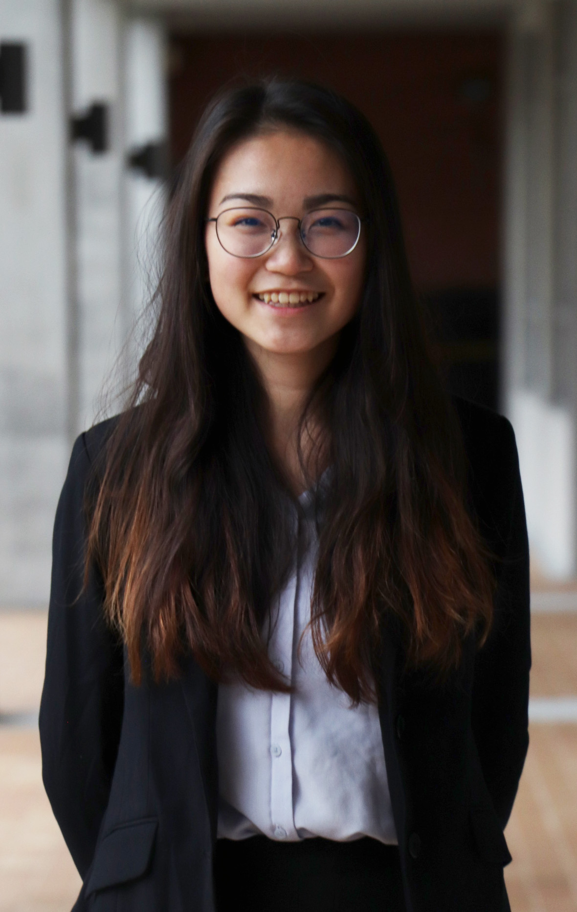
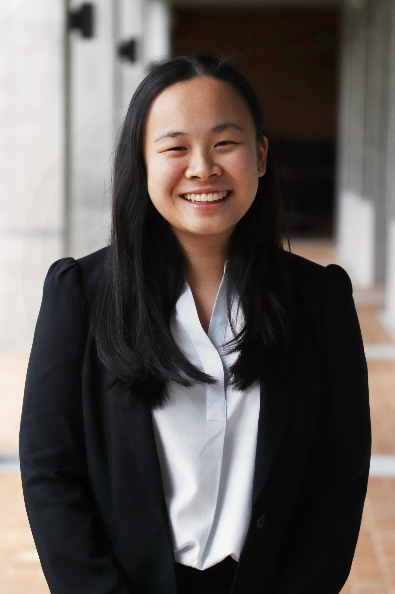

<div class="col-md-12">
  <div class="item row photo-item">
    <div class="col-sm-9">
      <h3 class="item-title">Yasmin and Yan Ying</h3>
      <h4 class="item-subtitle">Secretary Generals</h4>
      <p>Esteemed Delegates, Student Officers and Directors,<br>
        <br>We are your Secretaries-General, Yan Ying Mor and
        Yasmin Hung, and we’d like to warmly welcome you to our tenth annual TASMUN conference hosted in Taipei,
        Taiwan. <br>
        <br>Our individual MUN journeys began in the middle school, with conferences to Shanghai, Malaysia, and
        Singapore. Even though our experiences have differed in our choice of committees, the associated topics, and
        the respective themes, one conference always united the two of us: TASMUN.<br>
        <br>The TAS MUN program has not only taught us various skills related to research, public speaking, and
        diplomatic skills, but it also catalyzed our growth as globally conscious citizens of the international
        community. To us, TASMUN is more than just an annual home conference, it is an opportunity to further
        understand the diverse experiences of humankind through our engagement with those within and outside our
        community. <br>
        <br>TASMUN constantly challenged and surprised us with innovative twists each and every year. We
        witnessed the conference’s evolution from a relatively smaller conference with a select number of schools, to
        incorporating UN4MUN procedures, and finally incorporating the true essence of MUN Impact through Sustainable
        Development Goal aimed committees. TASMUN, as a conference, strives to extend MUN beyond the level of
        superficial debate - we strive to make a true difference.<br>
        <br>To mark the 10th year of TASMUN, we’ve decided to focus on our generation’s future by looking into our
        past. Though our predecessors have achieved milestones, it has come with colossal consequences. Our generation
        faces the burden of re-stabilizing our botched foundations while making plans for a sustainable future. We must
        not dwell on these setbacks, however, we must advance collaboratively with the right priorities. Therefore, the
        Sustainable Development goal we chose to focus on for TASMUN X is Goal 11: Sustainable Communities and Cities.
        As the world around us continues to expand and urbanize at an exponential rate, we need to ensure our future
        isn’t built at the expense of our health, the environment, and vulnerable populations.<br>
        <br> Our generation will not be known as the generation of procrastinators. We must not leave the problems of
        yesterday till today, and today till tomorrow. We must be willing to focus our individual efforts on creating
        global sustainability for the benefit of our future and the generations to come. Despite what you may have been
        told in the past, we believe that each and every one of you has the potential to make a genuine impact in your
        community and TASMUN can serve as the first step in the direction of change.<br>
        <br>We would like to extend our gratitude to you for expressing interest in our conference, and look forward to
        your attendance at TASMUN X, 2019.<br>
        <br>Sincerely,<br>Yan Ying Mor and Yasmin Hung<br>
        Secretaries General<br>
        TASMUN X
    </div>
    <div class="col-lg-3">
      </img>
    </div>
    <div class="col-lg-3">
      <hr>
    </div>
    <div class="col-lg-3">
      </img>
    </div>
  </div>
</div>